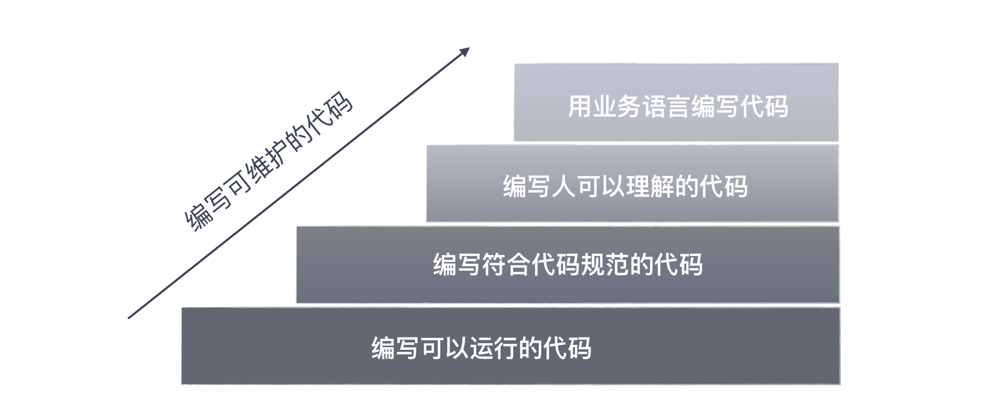

- 00 开篇词 程序员解决的问题，大多不是程序问题.md.html
- 01 10x程序员是如何思考的？.md.html
- 02 以终为始：如何让你的努力不白费？.md.html
- 03 DoD的价值：你完成了工作，为什么他们还不满意？.md.html
- 04 接到需求任务，你要先做哪件事？.md.html
- 05 持续集成：集成本身就是写代码的一个环节.md.html
- 06 精益创业：产品经理不靠谱，你该怎么办？.md.html
- 07 解决了很多技术问题，为什么你依然在“坑”里？.md.html
- 08 为什么说做事之前要先进行推演？.md.html
- 09 你的工作可以用数字衡量吗？.md.html
- 10 迭代0_ 启动开发之前，你应该准备什么？.md.html
- 11 向埃隆·马斯克学习任务分解.md.html
- 12 测试也是程序员的事吗？.md.html
- 13 先写测试，就是测试驱动开发吗？.md.html
- 14 大师级程序员的工作秘笈.md.html
- 15 一起练习：手把手带你分解任务.md.html
- 16 为什么你的测试不够好？.md.html
- 17 程序员也可以“砍”需求吗？.md.html
- 18 需求管理：太多人给你安排任务，怎么办？.md.html
- 19 如何用最小的代价做产品？.md.html
- 20 为什么世界和你的理解不一样？.md.html
- 21 你的代码为谁而写？.md.html
- 22 轻量级沟通：你总是在开会吗？.md.html
- 23 可视化：一种更为直观的沟通方式.md.html
- 24 快速反馈：为什么你们公司总是做不好持续集成？.md.html
- 25 开发中的问题一再出现，应该怎么办？.md.html
- 26 作为程序员，你也应该聆听用户声音.md.html
- 27 尽早暴露问题： 为什么被指责的总是你？.md.html
- 28 结构化：写文档也是一种学习方式.md.html
- 29 “懒惰”应该是所有程序员的骄傲.md.html
- 30 一个好的项目自动化应该是什么样子的？.md.html
- 31 程序员怎么学习运维知识？.md.html
- 32 持续交付：有持续集成就够了吗？.md.html
- 33 如何做好验收测试？.md.html
- 34 你的代码是怎么变混乱的？.md.html
- 35 总是在说MVC分层架构，但你真的理解分层吗？.md.html
- 36 为什么总有人觉得5万块钱可以做一个淘宝？.md.html
- 37 先做好DDD再谈微服务吧，那只是一种部署形式.md.html
- 38 新入职一家公司，怎么快速进入工作状态？.md.html
- 39 面对遗留系统，你应该这样做.md.html
- 40 我们应该如何保持竞争力？.md.html
- 划重点 “综合运用”主题内容的全盘回顾.md.html
- 划重点 “自动化”主题的重点内容回顾汇总.md.html
- 划重点 一次关于“沟通反馈”主题内容的复盘.md.html
- 划重点 关于“以终为始”，你要记住的9句话.md.html
- 划重点 关于“任务分解”，你要重点掌握哪些事？.md.html
- 加餐 你真的了解重构吗？.md.html
- 总复习 重新审视“最佳实践”.md.html
- 总复习 重新来“看书”.md.html
- 答疑解惑 如何分解一个你不了解的技术任务？.md.html
- 答疑解惑 如何在实际工作中推行新观念？.md.html
- 答疑解惑 如何管理你的上级？.md.html
- 答疑解惑 持续集成、持续交付，然后呢？.md.html
- 答疑解惑 持续集成，一条贯穿诸多实践的主线.md.html
- 结束语 少做事，才能更有效地工作.md.html
- 捐赠
21 你的代码为谁而写？
你好，我是郑晔。
关于“沟通反馈”的话题，我准备从代码开始讲起，毕竟我们程序员是靠代码与机器进行沟通的。
写代码是每个程序员的职责，程序员们都知道要把代码写好。但究竟什么叫写好呢？每个人的理解却是各有差异。
编写可维护的代码
初涉编程的程序员可能觉得能把功能实现出来的代码，就是好代码，这个阶段主要是基本功的学习，需要掌握的是各种算法、数据结构、典型的处理手法、常用的框架等等。
经过一段时间工作，日常工作所需的大多数代码，在你看来都是不在话下的。尤其像搜索和问答网站蓬勃发展之后，你甚至不需要像我初入职场时那样，记住很多常见的代码模式，现在往往是随手一搜，答案就有了。
再往后，更有追求的程序员会知道，仅仅实现功能是不够的，还需要写出可维护的代码。于是，这样的程序员就会找一些经典的书来看。
我在这方面的学习是从一本叫做《程序设计实践》（The Practice of Programming）的书开始的，这本书的作者是 Brian Kernighan 和 Rob Pike，这两个人都出身于大名鼎鼎的贝尔实验室，参与过 Unix 的开发。
写出可维护的代码并不难，它同样有方法可循。今天，我们用写代码中最简单的一件事，深入剖析怎样才能写出可维护的代码，这件事就是命名。

命名难题
计算机科学中只有两大难题：缓存失效和命名。- —— Phil Karlton
这是行业里流传的一个经典说法，无论是哪本写代码风格的书，都会把命名放在靠前的位置。
估计你开始写程序不久，就会有人告诉你不要用 a、b、c 做变量名，因为它没有意义；步入职场，就会有人扔给你一份编程规范，告诉你这是必须遵循的。
不管怎样，你知道命名是很重要的，但在你心目中，合格的命名是什么样的呢？
想必你知道，命名要遵循编码规范，比如：Java 风格的 camelCase，常量命名要用全大写。
但是，这类代码规范给出的要求，大多是格式上的要求。在我看来，这只是底线，不应该成为程序员的追求，因为现在很多编码规范的要求，都可以用静态检查工具进行扫描了。
我们的讨论要从名字的意义说起。作为程序员，我们大多数人理解为什么要避免起无意义的名字，但对于什么样的名字是有意义的，每个人的理解却是不同的。
名字起得是否够好，一个简单的评判标准是，拿着代码给人讲，你需要额外解释多少东西。
比如，我们在代码评审中会看到类似这样的场景：
评审者：这个叫 map 的变量是做什么用的？- 程序员：它是用来存放账户信息的，它的键值是账户 ID，值就是对应的账户信息。- 评审者：那为什么不直接命名成 accounts？
你知道评审者给出的这个建议是什么意思吗？如果不能一下子意识到，遇到类似的问题，你可能会和这个程序员一样委屈：这个变量本来就是一个 map，我把它命名成 map 怎么了？
变量的命名，实际上牵扯到一个重要问题，代码到底是给谁写的？
代码为谁而写？
任何人都能写出计算机能够理解的代码，只有好程序员才能写出人能够理解的代码。- —— Martin Fowler
代码固然是程序员与机器沟通的重要途径，但是，机器是直白的，你写的代码必须是符合某种规则的，这一点已经由编译器保证了，不符合规则的代码，你想运行，门都没有。
所以，只要你的代码是符合语言规则的，机器一定认。要让机器认，这并不难，你写得再奇怪它都认。行业里甚至有专门的混乱代码比赛。比如，著名的 IOCCC（The International Obfuscated C Code Contest，国际 C 语言混乱代码大赛）。
但是，我们写代码的目的是与人沟通，因为我们要在一个团队里与人协同工作。
与人沟通，就要用与人沟通的方式和语言写代码。人和机器不同，人需要理解的不仅是语言规则，还需要将业务背景融入其中，因为人的目的不是执行代码，而是要理解，甚至扩展和维护这段代码。
人要负责将业务问题和机器执行连接起来，缺少了业务背景是不可能写出好代码的。
我们在“为什么世界和你理解的不一样”这篇内容中就讲过，沟通的时候，输出时的编码器很重要，它是保证了信息输出准确性的关键。
很多程序员习惯的方式是用计算机的语言进行表达，就像前面这个例子里面的 map，这是一种数据结构的名字，是面向计算机的，而评审者给出的建议，把变量名改成 accounts，这是一个业务的名字。
虽然只是一个简单的名字修改，但从理解上，这是一步巨大的跨越，缩短了其他人理解这段代码所需填补的鸿沟，工作效率自然会得到提高。
用业务语言编程
写代码的时候，尽可能用业务语言，会让你转换一个思路。前面还只是一个简单的例子，我们再来看一个。
我们用最常用的电商下单过程来说，凭直觉我们会构建一个订单类 Order。什么东西会放在这个类里呢？
首先，商品信息应该在这个类里面，这听上去很合理。然后，既然是电商的订单，可能要送货，所以，应该有送货的信息，没问题吧。再来，买东西要支付，我们会选择一些支付方式，所以，还应该有支付信息。
就这样，你会发现这个订单类里面的信息会越来越多：会员信息可能也要加进去，折扣信息也可能会加入。
你是一个要维护这段代码的人，这个类会越来越庞大，每个修改都要到你这里来，不知不觉中，你就陷入了一个疲于奔命的状态。
如果只是站在让代码运行的角度，这几乎是一个无法解决的问题。我们只是觉得别扭，但没有好的解决方案，没办法，改就改呗！
但如果我们有了看业务的视角，我们会问一个问题，这些信息都放在“订单”是合理的吗？
我们可以与业务人员交流，询问这些信息到底在什么场景下使用。这时候你就会发现，商品信息主要的用途是下单环节，送货信息是在物流环节，而支付信息则用在支付环节。
有了这样的信息，你会知道一件事，虽然我们在用一个“订单”的概念，但实际上，在不同的场景下，用到信息是不同的。
所以，更好地做法是，把这个“订单”的概念拆分了，也就有了：交易订单、物流订单和支付订单。我们原来陷入的困境，就是因为我们没有业务知识，只能笼统地用订单去涵盖各种场景。
如果你在一个电商平台工作，这几个概念你可能并不陌生，但实际上，类似的错误我们在很多代码里都可以看到。
再举个例子，在很多系统里，大家特别喜欢一个叫“用户”的概念，也把很多信息塞到了“用户”里。但实际上，在不同的场景下，它也应该是不同的东西：比如，在项目管理软件中，它应该是项目管理员和项目成员，在借贷的场景下，它应该是借款方和贷款方等等。
要想把这些概念很好地区分出来，你得对业务语言有理解，为了不让自己“分裂”，最好的办法就是把这些概念在代码中体现出来，给出一个好的名字。这就要求你最好和业务人员使用同样的语言。
如果了解领域驱动设计（Domain Driven Design，DDD），你可能已经分辨出来了，我在这里说的实际上就是领域驱动设计。把不同的概念分解出来，这其实是限界上下文（Bounded Context）的作用，而在代码里尽可能使用业务语言，这是通用语言（Ubiquitous Language）的作用。
所以，一个好的命名需要你对业务知识有一个深入的理解，遗憾的是，这并不是程序员的强项，需要我们额外地学习，但这也是我们想写好代码的前提。现在，你已经理解了，取个好名字，并不是一件容易的事。
总结时刻
代码是程序员与机器沟通的桥梁，写好代码是每个程序员的追求，一个专业程序员，追求的不仅是实现功能，还要追求代码可维护。如果你想详细学习如何写好代码，我推荐你去读 Robert Martin 的《代码整洁之道》（Clean Code），这本书几乎覆盖了把代码写好的方方面面。
命名，是写程序中最基础，也是一个程序员从业余走向专业的门槛。我以命名为基础，给你解释了写好代码的提升路径。最初的层次是编写可以运行的代码，然后是编写符合代码规范的代码。
对于命名，最粗浅的理解是不要起无意义的名字，遵循编码规范。但名字起得是否够好，主要看是否还需要额外的解释。很多程序员起名字习惯于采用面向实现的名字，比如，采用数据结构的名字。
再进一步提升，编写代码是要写出人可以理解的代码。因为代码更重要的作用是人和人沟通的桥梁，起一个降低其他人理解门槛的名字才是好名字。
实际上，我们很多没写好的程序有一些原因就是名字起错，把一些概念混淆在一起了。想起好名字，就要学会用业务语言写代码，需要尽可能多地学习业务知识，把业务领域的名字用在代码中。
如果今天的内容你只能记住一件事，那请记住：用业务的语言写代码。
最后，我想请你思考一下，想要写好代码，还有哪些因素是你特别看重的？欢迎在留言区写下你的想法。
感谢阅读，如果你觉得这篇文章对你有帮助的话，也欢迎把它分享给你的朋友。
© 2019 - 2023 Liangliang Lee. Powered by gin and hexo-theme-book.